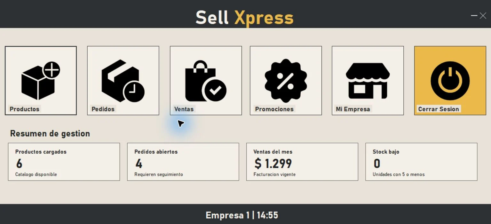

Proyecto destacado
Sistema de Gestión de Tiendas Online
Sell Xpress permite administrar un marketplace desde tres perfiles principales. BackOffice supervisa usuarios, empresas y productos; las empresas gestionan stock, pedidos, ventas y promociones; y los clientes navegan el catálogo, consultan compras y realizan pedidos.
- Dashboards operativos para BackOffice y empresas
- Filtros por texto, categoría, estado, stock, precio y fechas
- Exportación CSV para listados clave
- Pantallas de checkout y validaciones en un flujo de compra simulado
- Base MariaDB con datos demo preparados para presentación
